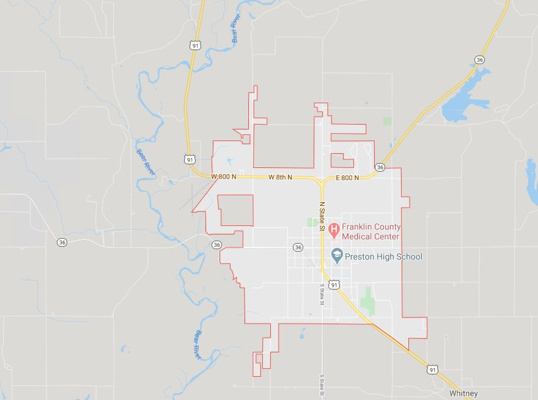

Preston Idaho
Hero image/weather summary
5 day forecast
Article



Weather News
 51 W Oneida St Preston, ID 83263
51 W Oneida St Preston, ID 83263
 888-888-8888
888-888-8888
 weathernews@wn.org
weathernews@wn.org